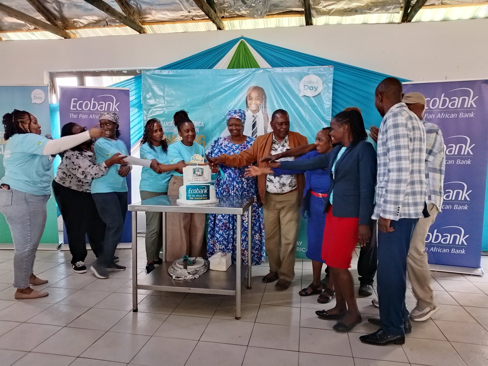
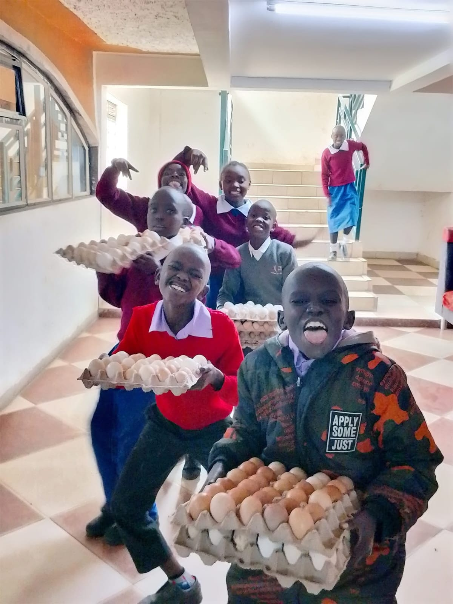
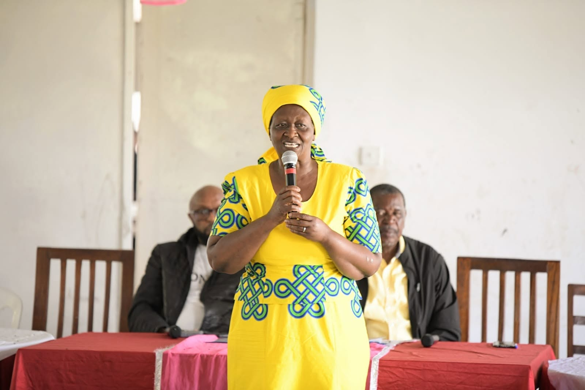
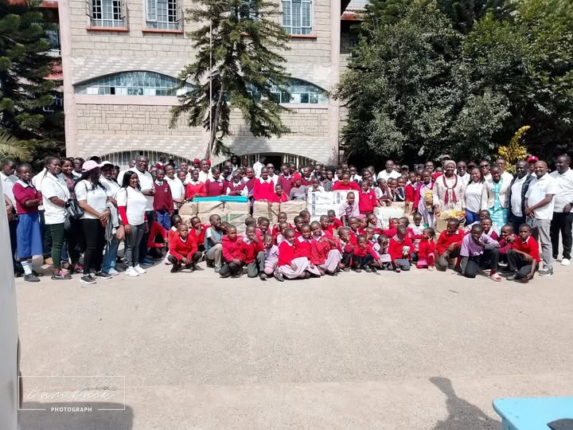
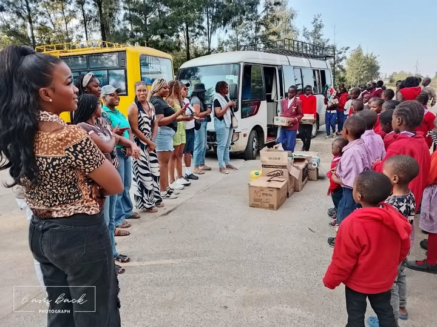
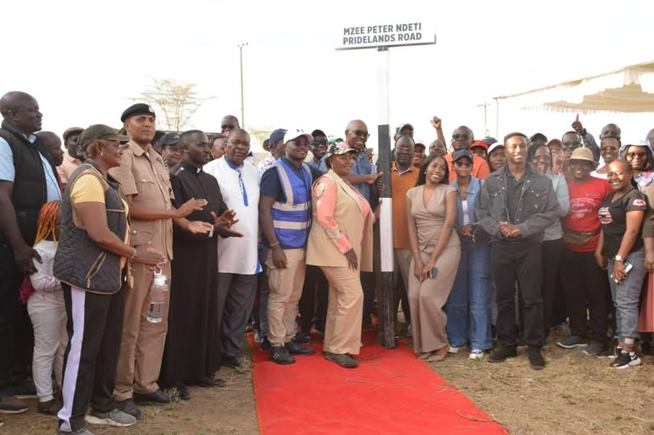

Heritage of Faith and Hope began with two people, thirty-eight children, and a conviction that every child deserves more than survival.
Our Story
Heritage of Faith and Hope Children’s Rehabilitation Centre is a legally registered Charitable Children’s Institution (CCI) by the Government of Kenya. Founded by Rev. Joseph and Teresia Waweru on 30 August 2002, the centre began its journey with 38 former street children. Over the years, it has grown to provide care and protection to over 100 Orphans and Vulnerable Children (OVCs).
The centre also actively engages with the local community through outreach programmes, awareness campaigns, and collaborative projects aimed at improving the welfare of children.
Over the years, more than 300 children who have passed through the centre have gone on to achieve significant milestones in education, careers, and personal development. These success stories are a testament to the centre’s impact and dedication.

Marking an anniversary with partners from Ecobank
Produce from the centre’s poultry projectMeet the Founders
Co-founder, Heritage of Faith and Hope. Alongside Teresia, opened the centre’s doors on 30 August 2002 and has guided its growth into a registered institution ever since.

Teresia WaweruCo-founder, Heritage of Faith and Hope. Has shaped the day-to-day care, warmth, and family feel that the centre is known for since its earliest days.
Together, Rev. Joseph and Teresia Waweru turned one act of compassion into a lasting institution, and more than two decades later, the family they started is still growing.
Mission
To transform the lives of orphans and vulnerable children through care, quality education, and spiritual grounding.
Vision
To be a comprehensive centre for the care, protection, empowerment, and transformation of children and youth.
What We Stand On
Every child is met with warmth first, structure second.
Spiritual grounding sits alongside academic and emotional growth.
A legally registered institution, run with transparency and accountability.
The work extends beyond the gate, in partnership with neighbours.
The Register · Measured So Far
We have the amazing facts about the organization. We are happy to be growing and helping more day by day.
Register · A Timeline
Rev. Joseph and Teresia Waweru take in 38 former street children in Mlolongo.
The centre is legally registered as a Charitable Children’s Institution by the Government of Kenya.
Play Group, Pre-School, Primary, and Junior Secondary School are established on the campus.
Education now runs through Form 3, with over 100 children cared for to date and an active community outreach programme.
“Every child who walks through our gate deserves a home, not just a bed.”
Placeholder framing line. Swap for a real quote from Rev. Joseph or Teresia whenever you have one.
In the Community
Beyond residential care, the centre stays active in the wider community.
Ongoing outreach work that extends care beyond the centre’s own residents.
Campaigns that raise awareness of child welfare across Mlolongo and beyond.
Partnerships with local organisations aimed at improving child welfare.

A donation day at the centre
Supplies arriving from a partner organisation
Recognised by the local community: the Pridelands Road naming ceremony